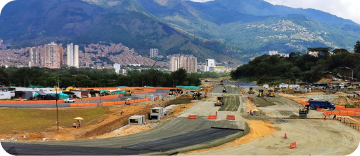

Caracteristicas:
- 14 Curvas
- Recta principal de 600 metros
- peralte maximo de 10 grados
- Varias configuraciones posibles, incluyendo un óvalo
- Pista de motocross de 1.260 metros.
- Kartódromo Juan Pablo Montoya de 1.220
El Autódromo de Tocancipá, inaugurado en 1982, nació como respuesta al cierre del Autódromo de Bogotá. Tras la adquisición de terrenos en Tocancipá, el diseño del circuito se llevó a cabo por la firma de arquitectos Luis Esguerra Urrea. Desde su apertura, ha sido escenario de importantes eventos como las 6 Horas de Bogotá, el Campeonato Nacional de Automovilismo y la Fórmula Renault 2.0, consolidándose como el circuito de carreras más importante de Colombia.
